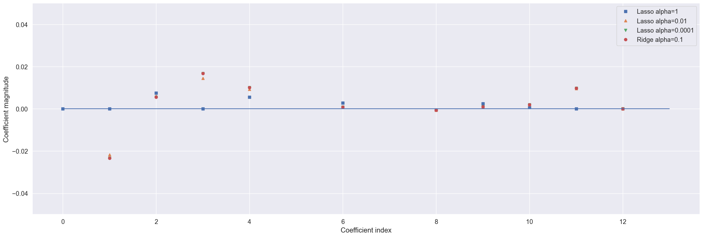

Cargue de Datos para el Modelo Regresión Lasso#
import numpy as np
import pandas as pd
import matplotlib.pyplot as plt
import seaborn as sns
import warnings
warnings.filterwarnings('ignore')
import plotly.express as px
import plotly.graph_objects as go
from sklearn.model_selection import train_test_split
from sklearn.linear_model import LinearRegression
from sklearn.metrics import mean_squared_error, r2_score
import os
for dirname, _, filenames in os.walk('/kaggle/input'):
for filename in filenames:
print(os.path.join(dirname, filename))
ruta = r'C:\Users\jthow\iCloudDrive\Documents\3_Maestria_Estadistica_UNINORTE\3_Tercer_Semestre\Machine_Learning\tornados.csv.zip'
df = pd.read_csv(ruta)
df.isnull().sum()
om 0
yr 0
mo 0
dy 0
date 0
time 0
tz 0
datetime_utc 0
st 0
stf 0
mag 756
inj 0
fat 0
loss 27170
slat 0
slon 0
elat 0
elon 0
len 0
wid 0
ns 0
sn 0
f1 0
f2 0
f3 0
f4 0
fc 0
dtype: int64
df['loss'] = df['loss'].replace(0, pd.NA)
df['loss'] = df['loss'].interpolate(method='linear')
# Imputar los valores NaN con la media de la columna 'mag'
df['mag'] = df['mag'].fillna(df['mag'].mean())
df.shape
(68693, 27)
Implementación Regresión Lasso L1#
import numpy as np
# Definir X y y (asegúrate de que ya tienes estas variables previamente definidas)
X = df[['mag', 'slat', 'slon', 'elat', 'elon', 'len', 'wid','fat','f1', 'f2', 'f3', 'f4','loss']]
y = df['inj']
# Dividir los datos en conjunto de entrenamiento y prueba (80% entrenamiento, 20% prueba)
X_train, X_test, y_train, y_test = train_test_split(X, y, test_size=0.2, random_state=42)
# Crear y ajustar el modelo de regresión lineal
lr = LinearRegression().fit(X_train, y_train)
from sklearn.linear_model import Lasso
lasso = Lasso().fit(X_train, y_train)
print("Training set score: {:.2f}".format(lasso.score(X_train, y_train)))
print("Test set score: {:.2f}".format(lasso.score(X_test, y_test)))
print("Number of features used: {}".format(np.sum(lasso.coef_ != 0)))
# Ver los coeficientes de cada variable en el modelo
coeficientes = pd.Series(lasso.coef_, index=X_train.columns)
# Ver el intercepto del modelo
intercepto = lasso.intercept_
# Mostrar los coeficientes y el intercepto
print("Coeficientes del modelo Lasso:")
print(coeficientes)
print("\nIntercepto del modelo Lasso:")
print(intercepto)
Training set score: 0.59
Test set score: 0.65
Number of features used: 9
Coeficientes del modelo Lasso:
mag 0.000000e+00
slat -0.000000e+00
slon 7.539867e-03
elat -0.000000e+00
elon 5.577088e-03
len 1.695515e-01
wid 2.760373e-03
fat 7.099604e+00
f1 -4.412743e-04
f2 2.441023e-03
f3 6.501204e-04
f4 0.000000e+00
loss 1.289027e-07
dtype: float64
Intercepto del modelo Lasso:
0.7162750490559711
lasso001 = Lasso(alpha=0.01, max_iter=100000).fit(X_train, y_train)
print("Training set score: {:.2f}".format(lasso001.score(X_train, y_train)))
print("Test set score: {:.2f}".format(lasso001.score(X_test, y_test)))
print("Number of features used: {}".format(np.sum(lasso001.coef_ != 0)))
# Ver los coeficientes de cada variable en el modelo
coeficientes = pd.Series(lasso001.coef_, index=X_train.columns)
# Ver el intercepto del modelo
intercepto = lasso001.intercept_
# Mostrar los coeficientes y el intercepto
print("Coeficientes del modelo lasso001:")
print(coeficientes)
print("\nIntercepto del modelo lasso001:")
print(intercepto)
Training set score: 0.59
Test set score: 0.66
Number of features used: 13
Coeficientes del modelo lasso001:
mag 1.022849e+00
slat -2.163464e-02
slon 6.103477e-03
elat 1.443582e-02
elon 9.277690e-03
len 1.329007e-01
wid 9.106679e-04
fat 7.640309e+00
f1 -6.663740e-04
f2 9.927145e-04
f3 1.946659e-03
f4 9.585565e-03
loss 1.143144e-07
dtype: float64
Intercepto del modelo lasso001:
0.803312439470272
lasso00001 = Lasso(alpha=0.0001, max_iter=100000).fit(X_train, y_train)
print("Training set score: {:.2f}".format(lasso00001.score(X_train, y_train)))
print("Test set score: {:.2f}".format(lasso00001.score(X_test, y_test)))
print("Number of features used: {}".format(np.sum(lasso00001.coef_ != 0)))
# Ver los coeficientes de cada variable en el modelo
coeficientes = pd.Series(lasso00001.coef_, index=X_train.columns)
# Ver el intercepto del modelo
intercepto = lasso00001.intercept_
# Mostrar los coeficientes y el intercepto
print("Coeficientes del modelo lasso00001:")
print(coeficientes)
print("\nIntercepto del modelo lasso00001:")
print(intercepto)
Training set score: 0.59
Test set score: 0.66
Number of features used: 13
Coeficientes del modelo lasso00001:
mag 1.039166e+00
slat -2.339887e-02
slon 5.486804e-03
elat 1.674618e-02
elon 1.015659e-02
len 1.322325e-01
wid 8.844667e-04
fat 7.645438e+00
f1 -6.756783e-04
f2 9.715061e-04
f3 1.961393e-03
f4 9.774258e-03
loss 1.141645e-07
dtype: float64
Intercepto del modelo lasso00001:
0.8018051980000815
from sklearn.linear_model import Ridge
ridge01 = Ridge(alpha=0.1).fit(X_train, y_train)
print("Training set score: {:.2f}".format(ridge01.score(X_train, y_train)))
print("Test set score: {:.2f}".format(ridge01.score(X_test, y_test)))
Training set score: 0.59
Test set score: 0.66
import matplotlib.pyplot as plt
import seaborn as sns
import seaborn as sns
sns.set(font_scale=1.2)
# Establecer el tamaño de la fuente
sns.set(font_scale=1.2)
# Crear la figura
plt.figure(figsize=(25, 8))
# Graficar los coeficientes para diferentes modelos
plt.plot(lasso.coef_, 's', label="Lasso alpha=1") # Tamaño de marcador aumentado
plt.plot(lasso001.coef_, '^', label="Lasso alpha=0.01")
plt.plot(lasso00001.coef_, 'v', label="Lasso alpha=0.0001")
plt.plot(ridge01.coef_, 'o', label="Ridge alpha=0.1")
# Ajustar las etiquetas y las líneas de referencia
plt.xlabel("Coefficient index")
plt.ylabel("Coefficient magnitude")
# Línea horizontal en y = 0 para visualización
plt.hlines(0, 0, len(lr.coef_))
# Ajustar el límite del eje Y
plt.ylim(-0e3, 0e3) # Ajusta según el rango de los coeficientes (puedes modificar esto)
# Cambiar el eje Y a una escala logarítmica si la disparidad es muy grande
# plt.yscale('symlog') # Descomenta esta línea si quieres usar una escala logarítmica
# Agregar la leyenda
plt.legend()
# Mostrar el gráfico
plt.show()

Metricas Regesión Lasso y Ridge con Pipe Line y Grid_Search#
pip install statsmodels
Requirement already satisfied: statsmodels in c:\users\jthow\miniconda3\envs\ml_venv\lib\site-packages (0.14.4)
Requirement already satisfied: numpy<3,>=1.22.3 in c:\users\jthow\miniconda3\envs\ml_venv\lib\site-packages (from statsmodels) (1.26.0)
Requirement already satisfied: scipy!=1.9.2,>=1.8 in c:\users\jthow\miniconda3\envs\ml_venv\lib\site-packages (from statsmodels) (1.10.1)
Requirement already satisfied: pandas!=2.1.0,>=1.4 in c:\users\jthow\miniconda3\envs\ml_venv\lib\site-packages (from statsmodels) (2.1.1)
Requirement already satisfied: patsy>=0.5.6 in c:\users\jthow\miniconda3\envs\ml_venv\lib\site-packages (from statsmodels) (1.0.1)
Requirement already satisfied: packaging>=21.3 in c:\users\jthow\miniconda3\envs\ml_venv\lib\site-packages (from statsmodels) (23.2)
Requirement already satisfied: python-dateutil>=2.8.2 in c:\users\jthow\miniconda3\envs\ml_venv\lib\site-packages (from pandas!=2.1.0,>=1.4->statsmodels) (2.8.2)
Requirement already satisfied: pytz>=2020.1 in c:\users\jthow\miniconda3\envs\ml_venv\lib\site-packages (from pandas!=2.1.0,>=1.4->statsmodels) (2023.3)
Requirement already satisfied: tzdata>=2022.1 in c:\users\jthow\miniconda3\envs\ml_venv\lib\site-packages (from pandas!=2.1.0,>=1.4->statsmodels) (2023.3)
Requirement already satisfied: six>=1.5 in c:\users\jthow\miniconda3\envs\ml_venv\lib\site-packages (from python-dateutil>=2.8.2->pandas!=2.1.0,>=1.4->statsmodels) (1.16.0)
Note: you may need to restart the kernel to use updated packages.
import numpy as np
import pandas as pd
from sklearn.metrics import mean_absolute_percentage_error, mean_squared_error, r2_score
from statsmodels.stats.diagnostic import acorr_ljungbox
from scipy.stats import jarque_bera
# Ensure grid_lasso and grid_ridge are loaded
if 'grid_lasso' not in globals() or 'grid_ridge' not in globals():
from joblib import load
grid_lasso = load('grid_lasso.joblib')
grid_ridge = load('grid_ridge.joblib')
# Haciendo predicciones con el mejor modelo de Lasso
y_pred_lasso = grid_lasso.best_estimator_.predict(X_test)
# Haciendo predicciones con el mejor modelo de Ridge
y_pred_ridge = grid_ridge.best_estimator_.predict(X_test)
# Calculando las métricas para Lasso
mape_lasso = mean_absolute_percentage_error(y_test, y_pred_lasso)
rmse_lasso = np.sqrt(mean_squared_error(y_test, y_pred_lasso))
r2_lasso = r2_score(y_test, y_pred_lasso)
# Calculando Ljung-Box p-value para Lasso
lb_test_lasso = acorr_ljungbox(y_test - y_pred_lasso, lags=[10])
lb_p_value_lasso = lb_test_lasso['lb_pvalue'].iloc[0] # Accede al valor p del primer lag (lag 10)
# Calculando Jarque-Bera p-value para Lasso
jb_p_value_lasso = jarque_bera(y_test - y_pred_lasso)[1]
# Calculando las métricas para Ridge
mape_ridge = mean_absolute_percentage_error(y_test, y_pred_ridge)
rmse_ridge = np.sqrt(mean_squared_error(y_test, y_pred_ridge))
r2_ridge = r2_score(y_test, y_pred_ridge)
# Calculando Ljung-Box p-value para Ridge
lb_test_ridge = acorr_ljungbox(y_test - y_pred_ridge, lags=[10])
lb_p_value_ridge = lb_test_ridge['lb_pvalue'].iloc[0] # Accede al valor p del primer lag (lag 10)
# Calculando Jarque-Bera p-value para Ridge
jb_p_value_ridge = jarque_bera(y_test - y_pred_ridge)[1]
# Resultados para Lasso
metrics_lasso = {
"MAPE": mape_lasso,
"RMSE": rmse_lasso,
"R Cuadrado": r2_lasso,
"Ljung-Box p-value": lb_p_value_lasso,
"Jarque-Bera p-value": jb_p_value_lasso
}
# Resultados para Ridge
metrics_ridge = {
"MAPE": mape_ridge,
"RMSE": rmse_ridge,
"R Cuadrado": r2_ridge,
"Ljung-Box p-value": lb_p_value_ridge,
"Jarque-Bera p-value": jb_p_value_ridge
}
# Crear un DataFrame combinado para las métricas de Lasso y Ridge
metrics_combined_df = pd.DataFrame({
"Lasso": metrics_lasso,
"Ridge": metrics_ridge
}).T
# Redondear los valores a dos decimales
metrics_combined_df = metrics_combined_df.round(2)
# Mostrar la tabla combinada
print("Métricas combinadas para Lasso y Ridge:")
print(metrics_combined_df)
---------------------------------------------------------------------------
ValueError Traceback (most recent call last)
Cell In[14], line 14
11 grid_ridge = load('grid_ridge.joblib')
13 # Haciendo predicciones con el mejor modelo de Lasso
---> 14 y_pred_lasso = grid_lasso.best_estimator_.predict(X_test)
16 # Haciendo predicciones con el mejor modelo de Ridge
17 y_pred_ridge = grid_ridge.best_estimator_.predict(X_test)
File ~\miniconda3\envs\ml_venv\lib\site-packages\sklearn\pipeline.py:787, in Pipeline.predict(self, X, **params)
785 if not _routing_enabled():
786 for _, name, transform in self._iter(with_final=False):
--> 787 Xt = transform.transform(Xt)
788 return self.steps[-1][1].predict(Xt, **params)
790 # metadata routing enabled
File ~\miniconda3\envs\ml_venv\lib\site-packages\sklearn\utils\_set_output.py:319, in _wrap_method_output.<locals>.wrapped(self, X, *args, **kwargs)
317 @wraps(f)
318 def wrapped(self, X, *args, **kwargs):
--> 319 data_to_wrap = f(self, X, *args, **kwargs)
320 if isinstance(data_to_wrap, tuple):
321 # only wrap the first output for cross decomposition
322 return_tuple = (
323 _wrap_data_with_container(method, data_to_wrap[0], X, self),
324 *data_to_wrap[1:],
325 )
File ~\miniconda3\envs\ml_venv\lib\site-packages\sklearn\preprocessing\_data.py:1062, in StandardScaler.transform(self, X, copy)
1059 check_is_fitted(self)
1061 copy = copy if copy is not None else self.copy
-> 1062 X = validate_data(
1063 self,
1064 X,
1065 reset=False,
1066 accept_sparse="csr",
1067 copy=copy,
1068 dtype=FLOAT_DTYPES,
1069 force_writeable=True,
1070 ensure_all_finite="allow-nan",
1071 )
1073 if sparse.issparse(X):
1074 if self.with_mean:
File ~\miniconda3\envs\ml_venv\lib\site-packages\sklearn\utils\validation.py:2919, in validate_data(_estimator, X, y, reset, validate_separately, skip_check_array, **check_params)
2835 def validate_data(
2836 _estimator,
2837 /,
(...)
2843 **check_params,
2844 ):
2845 """Validate input data and set or check feature names and counts of the input.
2846
2847 This helper function should be used in an estimator that requires input
(...)
2917 validated.
2918 """
-> 2919 _check_feature_names(_estimator, X, reset=reset)
2920 tags = get_tags(_estimator)
2921 if y is None and tags.target_tags.required:
File ~\miniconda3\envs\ml_venv\lib\site-packages\sklearn\utils\validation.py:2777, in _check_feature_names(estimator, X, reset)
2774 if not missing_names and not unexpected_names:
2775 message += "Feature names must be in the same order as they were in fit.\n"
-> 2777 raise ValueError(message)
ValueError: The feature names should match those that were passed during fit.
Feature names unseen at fit time:
- fat